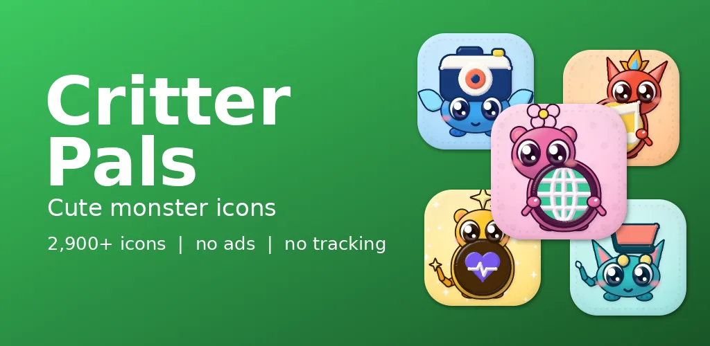
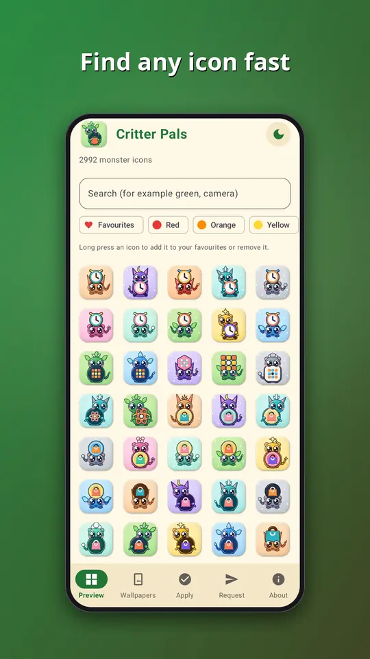
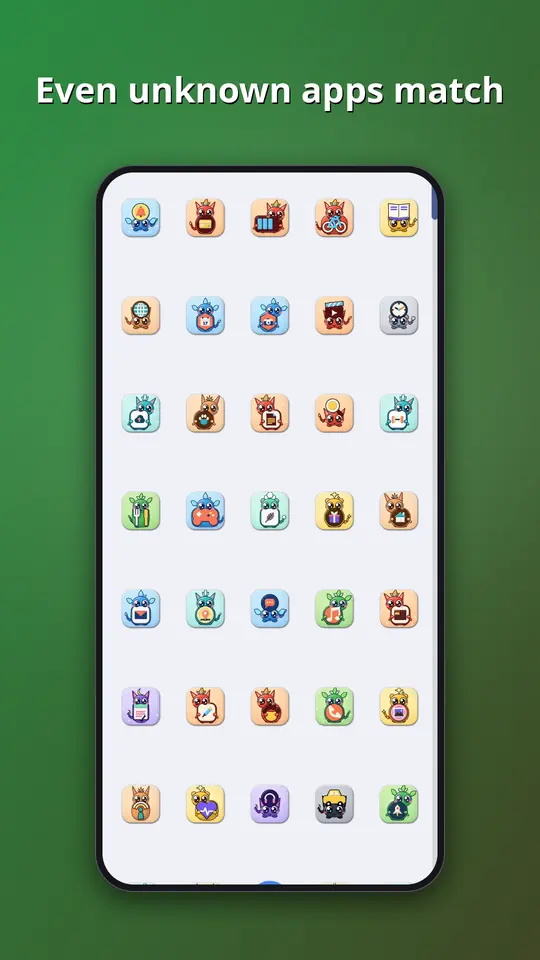
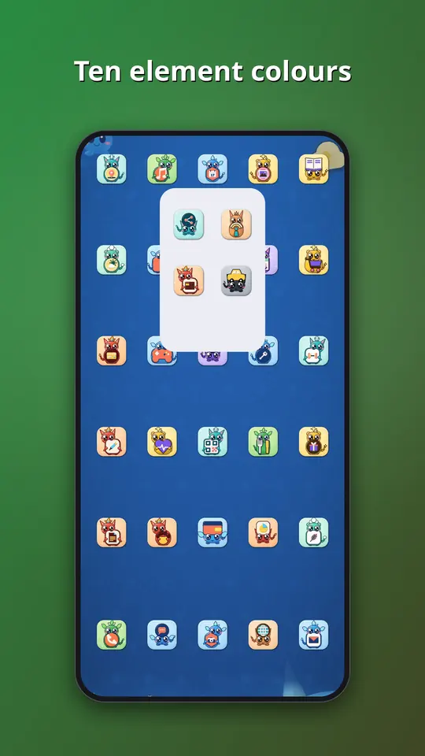
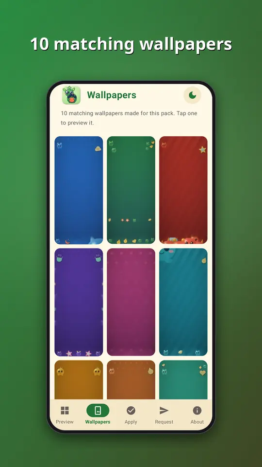
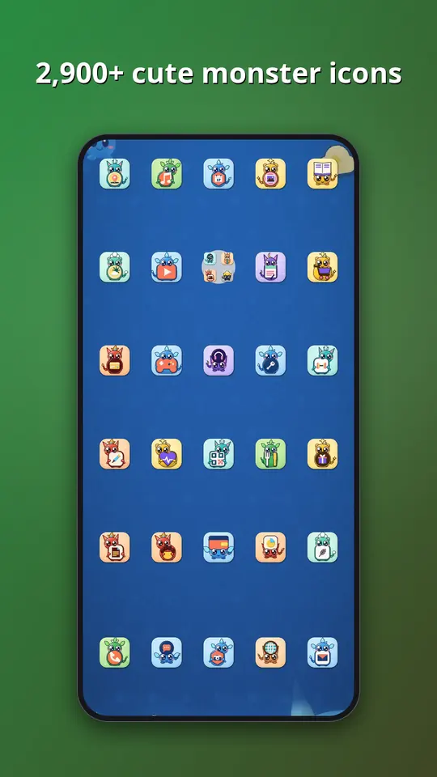
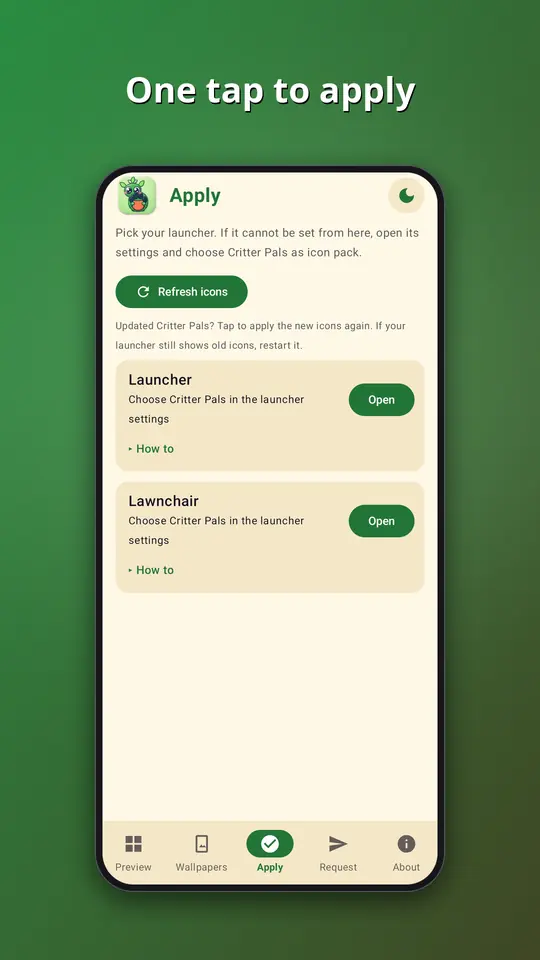
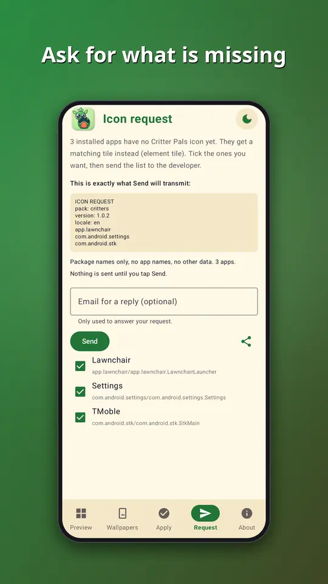

Critter Pals: Monster Icons
Cute monsters of ten elements carry your apps on a bright, friendly home screen. Privacy Policy Terms
Android icon pack, one-time purchase of €1.99 on Google Play, no ads, no subscription.

Screenshots







Every icon in one hand-made style, with a matching tile for apps that have no icon yet
Set a wallpaper for the home screen, the lock screen or both from inside the app
Switch between light and dark with the toggle in the app, or let it follow your phone
Nova, Lawnchair, Niagara, Smart, Apex and ADW launchers all take icon packs: open the app and press Apply
Pay once on Google Play, no subscription and no in-app purchases to unlock icons
The app only goes online when you tap Send on an icon request
12 matching wallpapers
Every wallpaper is made to go with the icons. Set one for the home screen, the lock screen or both, straight from the app.
About this icon pack
Critter Pals is a monster icon pack: 2,900+ custom icons, each carried by a small creature in one of ten element colours. Give the home screen, app drawer and folders of your Android launcher a friendly crowd.
The app also includes 12 matching wallpapers made to go with the icons, and you can set any of them from the app.
Somewhere between a sticker album and a creature collection lives Critter Pals. Every icon is carried by a small monster that wears or holds the symbol, across more than 2,900 icons.
Creatures
A leaf frog hugs your camera, a spark bat flaps off with your mail, a cloud puff snoozes on your weather. Each creature is invented for this pack and looks like no existing game or franchise. Big eyes, rosy cheeks, a crest and a tail tip that change with the element.
Elements
Ten element types, each with its own colour: tide, petal, sunny, sprout, ember, dusk, frosty, pebble, dune and puff. Your apps are matched by what they do, and the critter wearing the symbol is the one whose colour sits nearest the app's own. One dark coal critter looks after the black and charcoal apps.
Plates
Every icon sits on a soft plate in the tint of its element, in three patterns: a ring of dots, a pattern that matches the element, or little sparkles. A dark outline keeps every creature readable, even at launcher size.
Getting started
You need a launcher with icon pack support. Open Critter Pals, press Apply, done. Inside the app you can search all the icons, and every screen follows your phone's day or night setting. Is an app still bare? Mark it in the Request tab and send it along, or drop the developer a line from the About tab. Apps we have not drawn yet get a plain element tile, where your launcher allows a fallback.
Honesty
We drew each symbol and invented each creature ourselves. Nothing here copies a brand: you will find no company logos, and no app publisher has any part in this pack. It carries no advertising and no tracking, and the only time it connects is a request that you choose to send. One payment keeps it forever, and there is no subscription. Made by Mortek.
Which launcher do I need?
Icon packs work through a launcher that supports them, such as Nova Launcher, Lawnchair, Niagara, Smart Launcher, Apex Launcher or ADW Launcher. Install one, set it as your home app, open Critter Pals and press Apply for your launcher.
Samsung phone? Samsung's own launcher (One UI Home) does not support icon packs, so Samsung owners first install one of the launchers above. The app includes a short step by step guide for it.